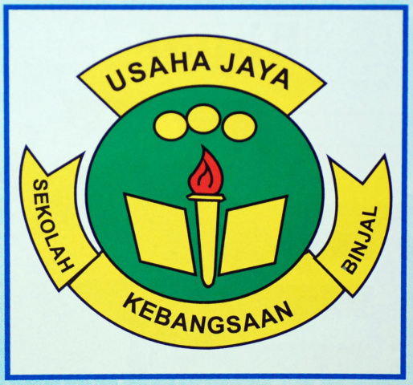
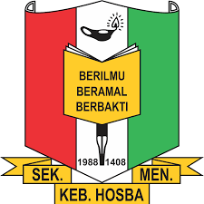

◤ My Educational Journey ◢
-

➽ UPSR (Ujian Penilaian Sekolah Rendah)
Institution: SK Binjal, Kedah
Year: 2011 - 2016
• Developed basic knowledge and skills in subjects like Bahasa Melayu, English, Mathematics, Science and Islamic Studies, laying the foundation for secondary education.
-

➽ PT3 (Penilaian Tingkatan Tiga) and SPM (Sijil Pelajaran Malaysia)
Institution: SMK Hosba, Kedah
Year: 2017 - 2022
• Built upon foundational knowledge and prepared for advanced academic challenges, while exploring various subjects to establish a strong foundation for future academic endeavours.
-

➽ Diploma in Information Management
Institution: Universiti Teknologi MARA (UiTM) Cawangan Kedah
Year: 2022 - Present
• Learned how to manage records, use information systems, analyze data with tools like Excel and SQL, and retrieve information efficiently, also studied ethical issues, data protection, and how organizations use information for decision-making.